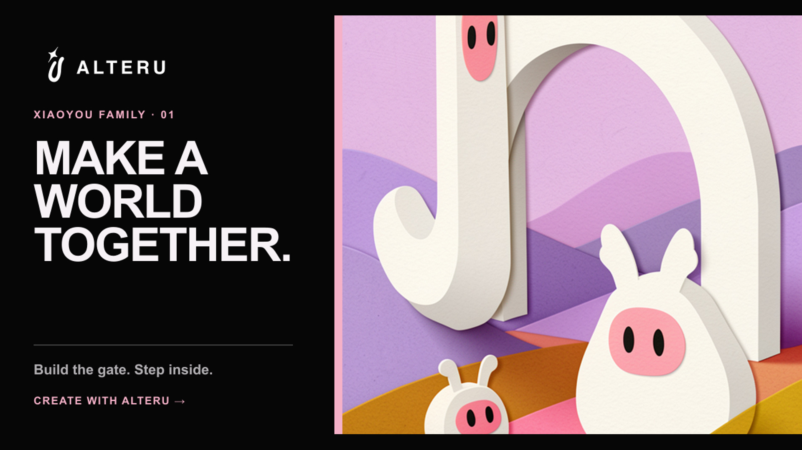
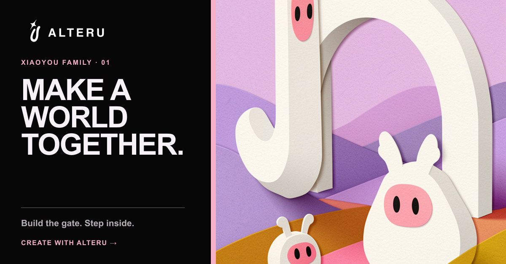
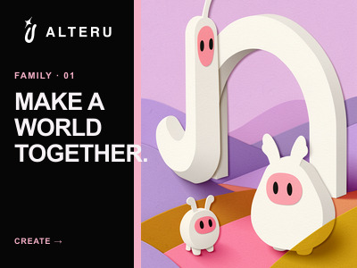
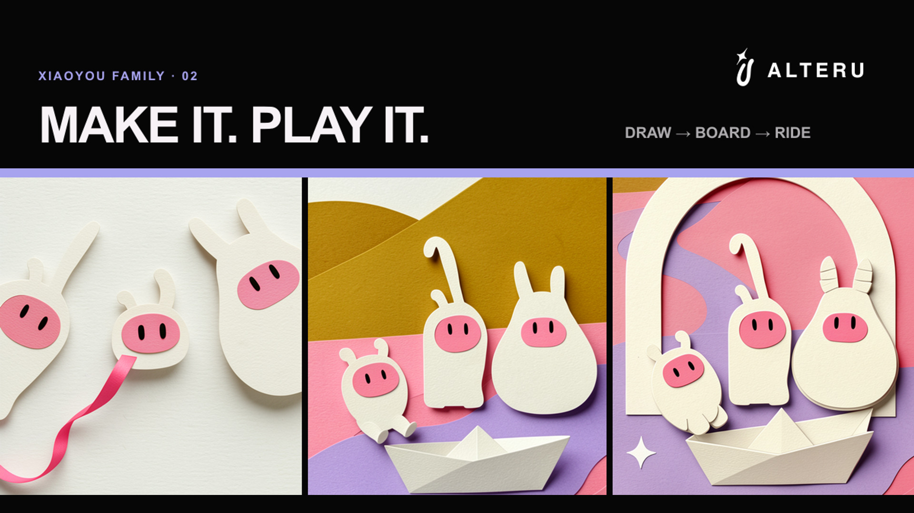
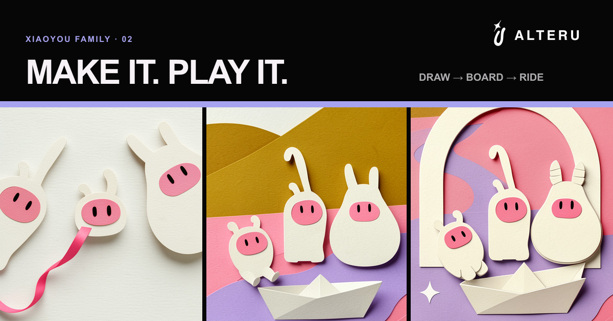
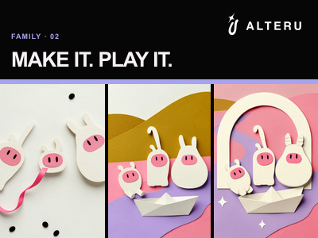
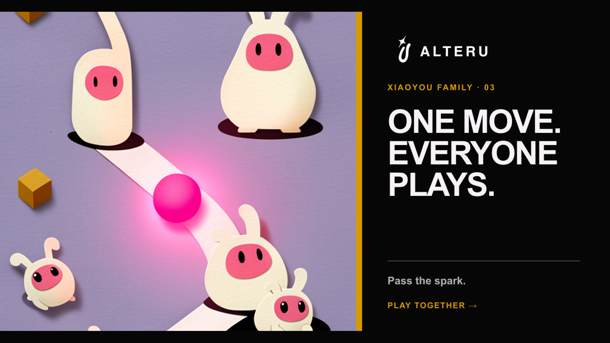
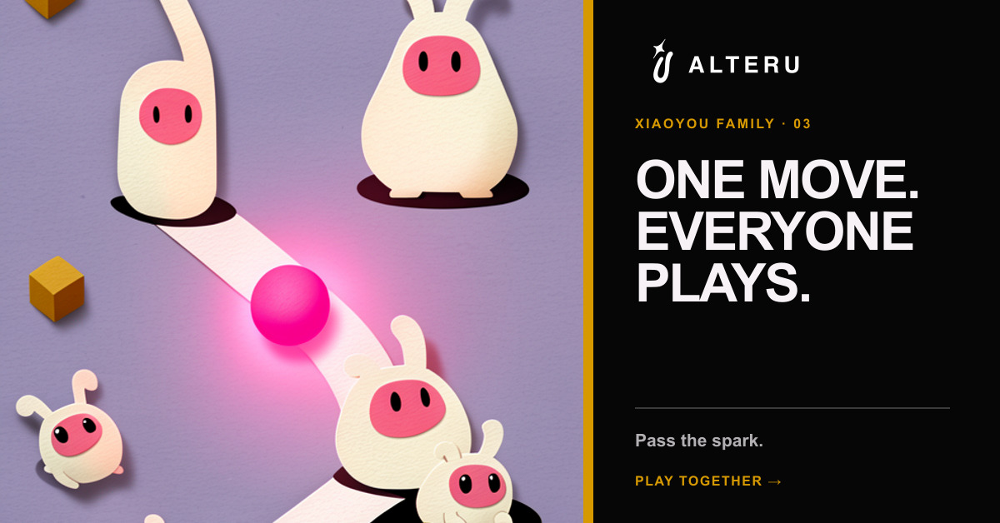
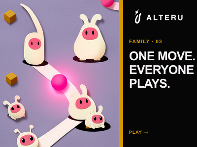

Campaign system · Two playable directions
Make it.
Then play it.
这次保留 River Row 单款版作为历史对照，同时把动作游戏方向升级为 38 秒的 Make → Play 混剪：四句制作要求分别生成四款可玩游戏，再立即进入对应的真实操作。RPG 主片仍以 56 秒展示更完整的叙事世界创建与持续游玩。
Make a world. Step inside.
V4 用短暂停顿与柔和过渡连接每次生成，更快进入第一轮移动、对白与选择；节省出的时间扩充为三个新场景的 RPG 混剪，让“继续玩”成为后半段的核心。
Make a world. Keep playing.
-
SMOOTHER WORLD BUILD
仍由四句话依次生成城市、快递员、同伴、守卫与信件；保留生成后的短暂停顿，再用交叉淡化进入下一句，整体提前约 2.4 秒进入游玩。
-
HANDOFF TO PLAY
Agent 明确回应“Your world is ready”，点击 Play 后不换成另一支宣传片，而是进入刚才创建的同一座城。
-
PLAY ONE COMPLETE RPG BEAT
玩家移动快递员接近同伴，触发具名对白，在三个行动中选择相信 Mara；随后守卫转身、信件打开、城门发光，任务更新为进入城门。
-
CONTINUE INTO A BIGGER WORLD
跟随两名角色穿过粉色城门，进入分岔走廊；发光路径升到屋顶，最后抵达漂浮着无数记忆卡片的档案室。三个场景获得更完整的动作与停留。
-
MONTAGE PAYOFF → BRAND
四个世界画面快速回闪，把“一个选择打开一个世界”压缩成视觉高潮，随后以“Make a world. Keep playing.”完成品牌收束。
Four ideas. Four playable games.
V3 不再只是游玩集锦。竞速、弹球、生存和滑切都先出现一句具体制作要求与 U 的生成过程，再立即切到真实操作，让“做游戏”和“玩游戏”在每一组里直接对应。
Make the game you want to play.
- FOUR-GAME HOOK
四种真实玩法快速闪现，并把问题从“你想玩什么”改为“你想做什么”。
- MAKE → PLAY · RIVER ROW
“Make me a fast river racing game.”生成画面由模糊变清晰，随后马上进入转向、加速与避障。
- MAKE → PLAY · MONSTER BASH
提出怪物弹球要求，显示 Playable 后切入弹板、碰撞和连续得分。
- MAKE → PLAY · BLOCK PARTY
提出夜间生存要求，随后进入街区移动、射击与拾取。
- MAKE → PLAY · FARM TO TABLE
提出快速滑切挑战，随后进入连续切击、Combo 与避开宠物的真实操作。
- RECAP → BRAND
四款游戏加速回看。尾卡文字整体留在黑色安全区，粉色与紫色波形下移，不再与说明文字融在一起。
Xiaoyou family multi-shot cut · 3 finished films
The family makes it.
Then plays it.
三条短片再次精修：每支由三个独立生成镜头组成，分别使用微距、环绕、侧移、追踪与俯拍机位。小优家族始终是动作发起者，画面不再像单张会动的海报。
下载多镜头精修成片包 ZIPReddit placement kit · verified 2026-09-02
同一个创意，按投放位置分别生产。
同事给出的尺寸里，400×300 是现行评论区缩略图规格；1200×628 作为旧广告卡片兼容稿保留。当前横版主稿按 Reddit 最新推荐使用 1920×1080，并保留原有 1080×1350 移动 Feed 版本。
下载完整投放素材包 ZIP16:9 · 当前官方推荐横版；图片与新视频都提供此尺寸。
4:3 · JPG / PNG · 每张均小于 500 KB。
1.91:1 · 仅在既有投放模板明确要求时使用，不再作为母版。

01 · Family Gate
创建向：一句话搭出入口，小优家族进入同一个新世界。


{kind=link}
{kind=link}
{kind=link}

02 · Family River
Make → Play：画出河道、折好纸船，然后全家一起开玩。


{kind=link}
{kind=link}
{kind=link}

03 · Family Chain
游玩向：一次轻触唤醒整个家族，把动作和反馈留在第一眼。


{kind=link}
{kind=link}
{kind=link}
Native 16:9 · 重新生产，不是改装竖版
三支片全部由新绘制的 1024×576 首尾帧与九个横版运动镜头生成，再输出为 1920×1080。每个时间点只出现一个完整镜头，没有三联画、拉伸或竖版裁切。
Say it.
Play it.
一句具体修改，游戏马上发生一个能被亲手使用的变化。它是长版创建流程的最短、最清楚版本。
- A1 · Family Gate“Build us a secret gate.”
- A2 · Family River“Make the river twist.”
- A3 · Monster Bash“Make every hit wake a monster.”
统一音序：发送 → 生成脉冲 → 游戏核心反馈 → U 双音尾声。
One move.
不解释平台，只展示一个完整的输入与连锁反馈。第一帧先给结果，最后一秒才出现游戏名和 Play CTA。
- B1 · River RowOne turn. Three near misses.
- B2 · Family ChainWake everyone with one hit.
- B3 · Farm to TableOne swipe. Don’t hit the cat.
每条保留游戏自己的音色，不再用统一电子提示音覆盖真实玩法反馈。
Who made
this?
用一句具体、略奇怪、像 Reddit 帖子标题的问题停住用户，再用真实画面证明这条规则真的存在。
- C1 · Dungeon ShiftA dungeon your friend rearranges?
- C2 · Trash or TreasureYour friend judges your worst purchase?
- C3 · Letters from AfarA world that remembers every traveller?
问题可直接复用为 Reddit post copy；视频内只保留最短核心句。
Pass it on.
一个人做出或留下东西，粉色信号穿过 U 形入口，另一个人在自己的时间完成下一步。
- D1 · Dungeon ShiftMove the dungeon. Change their route.
- D2 · The Stand-InLeave a trace in someone else’s identity.
- D3 · Letters from AfarWrite now. Someone answers later.
这一组承担 AlterU 的差异化：不是一次性生成，而是异步共同创造。
First wave: make six, learn, then expand.
首轮不一次做满 12 条。先选择六条覆盖创建、游玩、异步和 Reddit 原生问题钩子；每条只做两个文字 Hook，不同时改变画面、声音和 CTA。
两版不是互相替代，而是回答不同的投放问题。
RPG 版测试“一个具体世界与选择后果，能否同时带来创建欲和游玩欲”；Action V3.1 测试“多个简短而具体的 Make → Play 闭环，能否同时建立创作能力和游戏丰富度”。V3.1 已去掉重复的电子提示音，并让四组玩法音效更柔和地进入配乐；Action V2 与 River Row 单款版继续保留，用来区分纯游玩丰富度、四组制作闭环和单一玩法清晰度的效果。